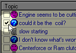
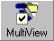
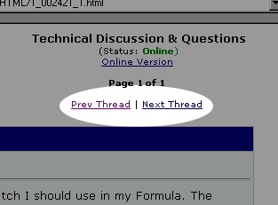

3.2 Using MultiView
PFFCD enables you to pre-select multiple threads for viewing. This is useful if you
want to read several related threads and want to quickly jump from one thread to another. To
mark a thread for viewing, click on the checkbox on the left of the desired topic:

After you have pre-selected all desired threads, click the MultiView button:

The first selected thread will now be opened in your browser. In addition, you will find links
to the next and previous thread in the top-right corner of your browser window:
